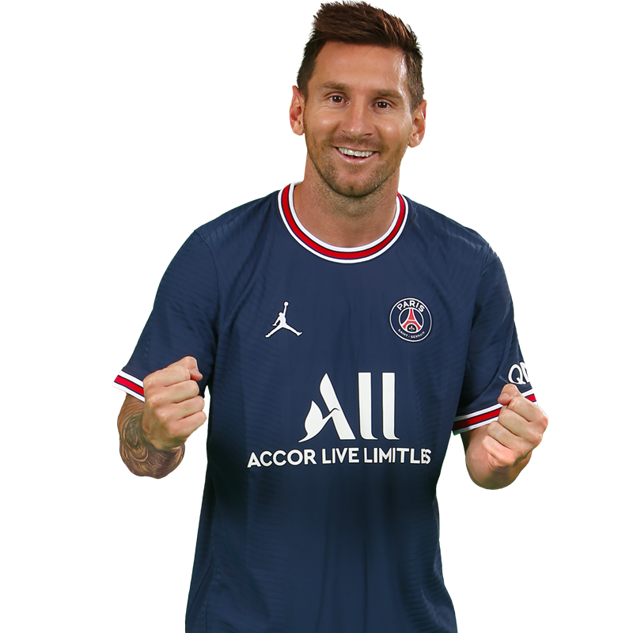

PAGINA SOBRE LEO MESSI
Esta página está dedicada a uno de los más grandes futbolistas de todos los tiempos: Lionel Andrés Messi. Aquí vas a encontrar un recorrido por su vida, su carrera, sus logros y los momentos que marcaron la historia del fútbol. Desde sus inicios en Rosario hasta su consagración como campeón del mundo con la Selección Argentina, pasando por su etapa legendaria en el Barcelona y su actualidad en el Inter Miami, esta web celebra su magia, su humildad y su legado eterno. Si sos fanático de Messi, este es tu lugar.
Consigue un saludo
